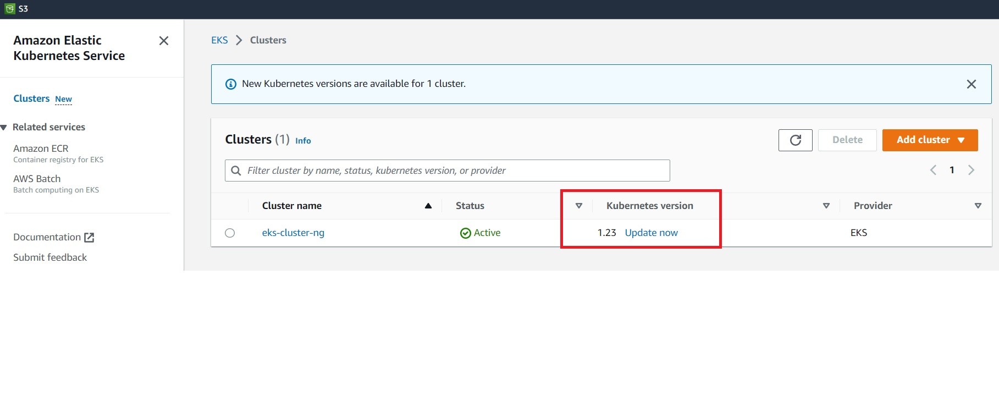

Create cluster with autoscaler
In this section, we will create a autoscaler that allows us to dynamically scale the nodes within a nodegroup - in and out. We will start by adding 3 new nodegroups to our existing cluster eks-cluster-ng:
- scale-east1b : Represents on-demand instances of one instance type running on a single AZ for stateful workloads
- scale-east1c : Represents on-demand instances of multiple instance types running on a single AZ for stateful workloads
- scale-spot : represents spot instances running on multi AZ for stateless workloads
The cluster auto-scaler automatically launches additional worker nodes if more resources are needed, and shutdowns worker nodes if they are under-utilized. The autoscaling works within a nodegroup, hence we will create a nodegroup first which has this feature enabled.
Create folder cluster-autoscaler. Copy the following contents into file eks-cluster.yaml:
piVersion: eksctl.io/v1alpha5
kind: ClusterConfig
metadata:
name: eks-cluster-ng
region: us-east-1
nodeGroups:
- name: scale-east1b
instanceType: t2.nano
desiredCapacity: 1
maxSize: 2
availabilityZones: ["us-east-1b"]
iam:
withAddonPolicies:
autoScaler: true
labels:
nodegroup-type: stateful-east1b
instance-type: onDemand
- name: scale-east1c
instanceType: t2.micro
desiredCapacity: 1
maxSize: 3
availabilityZones: ["us-east-1c"]
iam:
withAddonPolicies:
autoScaler: true
labels:
nodegroup-type: stateful-east1c
instance-type: onDemand
ssh: # use existing EC2 key
publicKeyName: eks-course
- name: scale-spot
desiredCapacity: 1
maxSize: 4
instancesDistribution:
instanceTypes: ["t2.micro", "t2.small"]
onDemandBaseCapacity: 0
onDemandPercentageAboveBaseCapacity: 0
availabilityZones: ["us-east-1b","us-east-1c"]
iam:
withAddonPolicies:
autoScaler: true
labels:
nodegroup-type: stateless-workload
instance-type: spot
ssh:
publicKeyName: eks-course
availabilityZones: ["us-east-1b","us-east-1c"]
This will tell EKS to :
- Apply additional cluster configurations to cluster
eks-cluster-ng - Apply defintions for 3 nodegroups :
- scale-east1b : On-demand instances in us-east-1b
- scale-east1c : On-demand instances in us-east-1c
- scale-spot : Spot instances in us-east-1b, us-east-1c
- Note the autoScaler property is set to
true
Create cluster nodegroups
We will now create the new nodegroups in our existing cluster
eksctl create nodegroup --config-file=eks-cluster.yaml
kubectl get nodes
PS C:\Users\aniru\workspace\github\aws-eks\cluster-autoscaler> kubectl get nodes
NAME STATUS ROLES AGE VERSION
ip-192-168-14-220.ec2.internal Ready <none> 2m7s v1.23.15-eks-49d8fe8
ip-192-168-20-253.ec2.internal Ready <none> 4h51m v1.23.15-eks-49d8fe8
ip-192-168-33-152.ec2.internal Ready <none> 4h51m v1.23.15-eks-49d8fe8
ip-192-168-53-222.ec2.internal Ready <none> 78s v1.23.15-eks-49d8fe8
ip-192-168-61-217.ec2.internal Ready <none> 2m56s v1.23.15-eks-49d8fe8
Check the AGE column to see which of the instances were started. Now let's check the nodegroups using :
eksctl get nodegroup --cluster=eks-cluster-ng
PS C:\Users\aniru\workspace\github\aws-eks\cluster-autoscaler> eksctl get nodegroup --cluster=eks-cluster-ng
CLUSTER NODEGROUP STATUS CREATED MIN SIZE MAX SIZE DESIRED CAPACITY INSTANCE TYPE IMAGE ID ASG NAME TYPE
eks-cluster-ng ng-1 CREATE_COMPLETE 2023-02-14T07:23:00Z 2 2 2 t2.nano ami-0d4bdb1cf2f07d811 eksctl-eks-cluster-ng-nodegroup-ng-1-NodeGroup-1LRT8H4ZKAVO9 unmanaged
eks-cluster-ng scale-east1b CREATE_COMPLETE 2023-02-14T12:10:31Z 1 2 1 t2.nano ami-0d4bdb1cf2f07d811 eksctl-eks-cluster-ng-nodegroup-scale-east1b-NodeGroup-PVRF5CRPR3DU unmanaged
eks-cluster-ng scale-east1c CREATE_COMPLETE 2023-02-14T12:10:31Z 1 3 1 t2.nano ami-0d4bdb1cf2f07d811 eksctl-eks-cluster-ng-nodegroup-scale-east1c-NodeGroup-15I9RHLLNMPQR unmanaged
eks-cluster-ng scale-spot CREATE_COMPLETE 2023-02-14T12:10:32Z 1 4 1 t2.micro ami-0d4bdb1cf2f07d811 eksctl-eks-cluster-ng-nodegroup-scale-spot-NodeGroup-1SZS5D6OYGK21 unmanaged
Let's delete the starter nodegroup ng-1
eksctl delete nodegroup --cluster=eks-cluster-ng --name='ng-1'
PS C:\Users\aniru\workspace\github\aws-eks\cluster-autoscaler> eksctl delete nodegroup --cluster=eks-cluster-ng --name='ng-1'
2023-02-14 07:31:27 [ℹ] 1 nodegroup (ng-1) was included (based on the include/exclude rules)
2023-02-14 07:31:28 [ℹ] will drain 1 nodegroup(s) in cluster "eks-cluster-ng"
2023-02-14 07:31:28 [ℹ] starting parallel draining, max in-flight of 1
2023-02-14 07:31:31 [ℹ] cordon node "ip-192-168-20-253.ec2.internal"
2023-02-14 07:31:31 [ℹ] cordon node "ip-192-168-33-152.ec2.internal"
Create deployment for auto-scaler
Deploy the auto-scaler itself:
kubectl apply -f https://raw.githubusercontent.com/kubernetes/autoscaler/master/cluster-autoscaler/cloudprovider/aws/examples/cluster-autoscaler-autodiscover.yaml
PS C:\Users\aniru\workspace\github\aws-eks\cluster-autoscaler> kubectl apply -f https://raw.githubusercontent.com/kubernetes/autoscaler/master/cluster-autoscaler/cloudprovider/aws/examples/cluster-autoscaler-autodiscover.yaml
serviceaccount/cluster-autoscaler created
clusterrole.rbac.authorization.k8s.io/cluster-autoscaler created
role.rbac.authorization.k8s.io/cluster-autoscaler created
clusterrolebinding.rbac.authorization.k8s.io/cluster-autoscaler created
rolebinding.rbac.authorization.k8s.io/cluster-autoscaler created
deployment.apps/cluster-autoscaler created
Add annotation to the deployment
This prevents from being evicted
kubectl -n kube-system annotate deployment.apps/cluster-autoscaler cluster-autoscaler.kubernetes.io/safe-to-evict="false"
PS C:\Users\aniru\workspace\github\aws-eks\cluster-autoscaler> kubectl -n kube-system annotate deployment.apps/cluster-autoscaler cluster-autoscaler.kubernetes.io/safe-to-evict="false"
deployment.apps/cluster-autoscaler annotated
Set image version and cluster name
We will now set matching image version and cluster name eks-cluster-ng in the deployment. Get the autoscaler image version:
Open Kubernetes/Autoscalar Releases and get the latest release version matching your Kubernetes version, e.g. Kubernetes 1.14 => check for 1.14.n where "n" is the latest release version

Edit deployment and set your EKS cluster name:
kubectl -n kube-system edit deployment.apps/cluster-autoscaler
- set the image version at property
image=k8s.gcr.io/cluster-autoscaler:vx.yy.z
image: registry.k8s.io/autoscaling/cluster-autoscaler:v1.23.0
- set your EKS cluster name at the end of property
- --node-group-auto-discovery=asg:tag=k8s.io/cluster-autoscaler/enabled,k8s.io/cluster-autoscaler/<<EKS cluster name>>
- --node-group-auto-discovery=asg:tag=k8s.io/cluster-autoscaler/enabled,k8s.io/cluster-autoscaler/eks-cluster-ng
kubectl -n kube-system describe deployment cluster-autoscaler